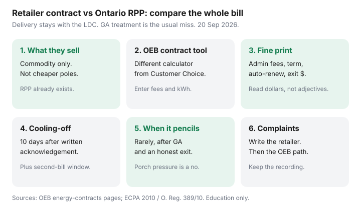

Utilities · Canada
Ontario Energy Retailer Contracts vs Your Utility’s Regulated Rates: A Comparison Framework
Door-to-door and phone pitches sell “savings” that ignore delivery, Global Adjustment, and the exit fee. An Ontario electricity retailer contract vs utility rates comparison is an OEB-framed worksheet, not a brand review. Your local utility already sells you the Regulated Price Plan. A retailer sells a different commodity product. Delivery stays put.
If you are still on RPP and only choosing a clock, you want the free election, not a contract. Read delivery anatomy so a ¢ screenshot does not win the argument.
Disclosure: There is no natural affiliate product in a retailer-versus-RPP comparison. Saving Optimizer does not claim OEB, retailer, or utility partnerships. This is education — not a recommendation of any contract.
Key takeaways
- Retailers sell electricity (and sometimes gas) commodity, not cheaper poles. Delivery and most regulatory charges stay with the LDC. Fewer than one in ten Ontario households are on an electricity retailer.
- On RPP, Global Adjustment is inside TOU/ULO/Tiered ¢. On many contracts, GA is a separate moving line. A “fixed 8.5 ¢” that ignores GA is not a comparison.
- Use the OEB bill calculator’s contract comparison mode — a different tool from Customer Choice. Enter the contract ¢, fees, and your kWh. Then read the paper.
- Cooling-off: 10 days after you acknowledge the written contract. For contracts on or after 22 Jun 2016 you can also cancel without a cancellation fee up to 30 days after the second bill (you still pay those bills). Later exits can cost up to a typical $50 residential cap — read your clause.
- Stay RPP unless the OEB estimate plus written fees still wins after GA and delivery. Complain to the retailer first, then the OEB if the contract or the sale feels off.
What retailers sell vs what your local utility already provides
Your LDC already delivers power and, if you never signed a contract, sells you RPP commodity — TOU, ULO, or Tiered, including a forecast of Global Adjustment, with the 23.5% OER on an eligible bill. A licensed electricity retailer sells a contract price for that commodity. The poles do not change. The Customer Choice election disappears until you cancel and return to RPP.
Gas retailers are a parallel product on the Enbridge (or other gas distributor) bill. This page is the electricity framework; the same “read the exit clause” discipline applies to gas. Do not let a dual-fuel pitch hide a rich gas ¢ behind a cheap power ¢.

Using the OEB bill calculator’s contract comparison mode
The OEB landing page links two calculators. Customer Choice prices TOU vs ULO vs Tiered. The energy contract comparison prices a retailer offer against RPP on your usage. Use the second tool for this job:
- Have the contract’s electricity ¢, any monthly admin fee, and the term in writing — not the porch script.
- Enter your LDC so delivery matches. Delivery will appear on both sides; that is the point.
- Enter winter and summer kWh. One July is a lie in January.
- Read the all-in estimate, including GA treatment. If the tool and the salesperson disagree, believe neither until you see a sample bill.
Do not paste a contract ¢ into the Customer Choice calculator and call it research. That tool assumes RPP.
Exit fees, fixed vs variable offers, and fine-print traps
| Offer type | What you think you bought | Where it breaks |
|---|---|---|
| RPP (utility) | OEB-set TOU, ULO, or Tiered, GA included, OER on eligible bills | The clock can punish dinner-hour heat; delivery is still local |
| Fixed retailer ¢ | A locked commodity price for a term | GA as a separate line; admin fees; exit fees after cooling-off |
| Variable / “market” retailer | A ¢ that moves | Harder to budget; still not cheaper delivery |
| Auto-renewal | “We’ll just continue you” | A new term you did not shop; cancellation rights still exist — use them |
OEB consumer pages (used 20 Sep 2026) describe cancellation-fee rules that, for typical residential contracts after the extra no-fee windows, have been capped around $50. Your paper can be stricter in how they calculate it. Read the dollars, not the adjective “low.”
Cooling-off and cancellation rights at a high level
This is education, not a legal opinion. The Energy Consumer Protection Act and O. Reg. 389/10 (as amended, including O. Reg. 241/16) are the source. In household language:
- You must receive a written copy and acknowledge it. No acknowledgement, no valid contract.
- 10-day cooling-off after that acknowledgement — cancel for any reason, no cancellation fee, service continues.
- A recorded verification call typically lands 10–45 days later. You can say no. The contract becomes invalid.
- For electricity contracts entered into on or after 22 June 2016, you can also cancel without cost or penalty up to 30 days after the second bill under the contract. You still pay for the electricity you used on those bills.
- After those windows, you can still cancel with notice (the regulation’s ordinary notice period is 10 days) and a possible fee.
Cancel in writing and keep the timestamp. If the retailer “cannot find” the cancellation, that is an OEB complaint, not a reason to pay a made-up release fee.
When a contract might pencil out (rarely) vs when to stay RPP
Stay on RPP when the OEB contract calculator cannot beat TOU/ULO/Tiered after GA, fees, and an honest exit-fee scenario (you move, you hate the bill, rates fall). That is most households. A contract might be worth a second look only if:
- The written all-in, including a conservative GA assumption, still wins on your 12 months, and
- The exit fee is a number you could pay from a chequing account without drama, and
- Nobody is rushing you on a porch.
Even then, re-read plan choice. A free ULO election for an overnight EV is a different product from a five-year retailer. If the house leaks, neither product fixes the patio door — see air sealing.
Complaint path via the OEB if something feels off
Start with the retailer in writing: date of sale, what was promised, what the bill shows. Then use the OEB’s energy-contracts and complaints process (oeb.ca consumer-information-and-protection). Keep the contract, the verification recording if you asked for it (they must send a copy within 10 days), and the bills.
High-pressure “your power will be cut unless you sign today” is a sales script. Licensed distributors do not enrol RPP through a clipboard. LEAP and winter disconnection rules are a different file — see the winter ban if the real problem is arrears.
Sources & date stamps
- OEB, Energy contracts / After you sign up — 10-day cooling-off; verification call; written copy and acknowledgement (used 20 Sep 2026).
- OEB, Bill calculator — separate Customer Choice and retailer-contract comparison tools.
- Energy Consumer Protection Act, 2010, s. 19 — cooling-off after written copy and acknowledgement.
- O. Reg. 389/10 as amended by O. Reg. 241/16 — cancel without cost or penalty up to 30 days after the second bill on post-22 Jun 2016 electricity contracts; notice and fee rules.
- OEB, Electricity rates and Understanding your bill — GA inside RPP; retailer bills often show GA separately.
- OEB consumer pages — typical residential cancellation-fee cap context (~$50); confirm your clause.
Frequently asked questions
Can I be on a retailer contract and still pick TOU or ULO?
Not at the same time. Cancel the retailer contract first. Global Adjustment is extra on many contracts. Your first RPP bill may still open on TOU.
How long do I have to cancel a new Ontario energy contract?
10 days after you acknowledge the written contract, for any reason. For electricity contracts on or after 22 June 2016 you can also cancel without a cancellation fee up to 30 days after the second bill (you still pay those bills).
Does a retailer make delivery cheaper?
No. You are shopping the commodity line. The LDC still bills delivery and most regulatory charges.
Why is Global Adjustment on my retailer bill but not my neighbour’s?
Your neighbour is likely on RPP, where the OEB folds a GA forecast into TOU, ULO, or Tiered. Many retailer bills print GA as its own line.
Who do I complain to if the sale or the bill feels wrong?
Write the retailer first. Then use the OEB’s energy-contract complaint process. Keep the contract, bills, and any verification recording.